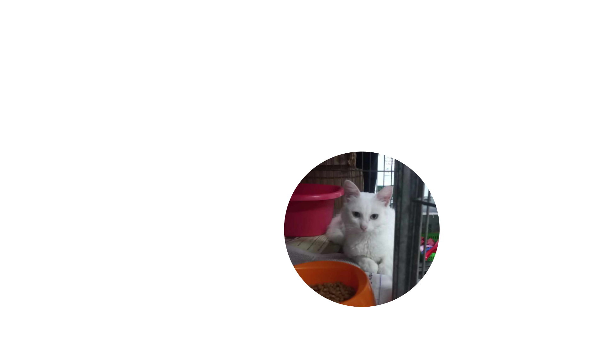

A ONG Gatos da Lagoa Taquaral é dedicada aos gatos que vivem na lagoa do Taquaral. Cuidamos, alimentamos e promovemos a castração e vacinação dos felinos para garantir sua saúde e bem-estar. Nosso objetivo é controlar a população de gatos exclusivamente na lagoa do Taquaral e encontrar lares adotivos amorosos para eles. Contamos com o apoio da comunidade e de nossos voluntários para realizar esse trabalho importante.
